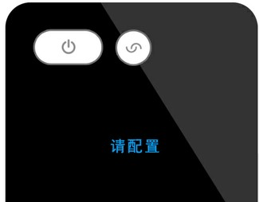
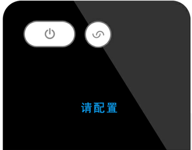

綁定UCON遙控器
當UCON遙控器開機後，遙控器螢幕應顯示如下
遙控器綁定過程中，請保證UCON遙控器與處於手機藍牙可連接範圍內
打開手機APP，即可根據介面上的提示，通過藍牙搜索到您的設備。
系統搜索到設備後，可以為設備命名，保存後完成UCON遙控器與手機APP的綁定。
此時如顯示綁定失敗，請檢查UCON遙控器是否在手機附近，如果仍提示失敗，請重啟手機藍牙再次嘗試
如果您購買的是UCON套裝，請先將UCON底座接上電源，同時UCON遙控器處於開機狀態，然後在APP中選擇需要添加的設備為“UCON套裝”。
系統搜索到UCON套裝後，會自動找到手機連接的WiFi熱點，此時需輸入此熱點的密碼和設備名稱，以完成UCON底座與手機APP的綁定。
請注意：UCON套裝僅支持2.4GHz頻段WiFi熱點，不支持5GHz。此時如顯示綁定失敗，請檢查WiFi熱點是否可正常聯網，並建議將UCON底座和遙控器靠近WiFi路由器，如果仍提示失敗，請重啟手機WiFi再次嘗試。
完成UCON底座與手機APP的綁定後，可重複上一節步驟，完成UCON遙控器與手機APP的綁定。

後續可通過APP中的“幫助>>UCON套裝管理”進行UCON底座版本查詢或刪除已綁定的底座。
以後遙控器開啟或喚醒時，螢幕上會顯示遙控器名稱。
配置UCON遙控器
UCON遙控器完成綁定後，遙控器螢幕應顯示如下：
遙控器配置過程中，請保證UCON遙控器與處於手機藍牙可連接範圍內
點擊APP介面中央或者標題列右側的“+”，可以進入遙控器配置狀態，此時遙控器螢幕應顯示為：
配置遙控方式可以分為兩種：
A. 下載家電控制碼（無需原家電遙控器）
B. 學習遙控器紅外碼（需要原家電遙控器）
A-下載家電控制碼
依次選擇家電類型、家電品牌，可進入下載家電控制碼
一個品牌下通常會包含若干個家電控制碼，收到APP介面下載成功的提示後，請將UCON對準家電，根據APP頁面提示的功能，依次測試對應的功能是否能夠實現對家電的正確控制。
如果不能正確控制，請點擊右下角箭頭切換下一個控制碼，直到可以正確控制
如果提示下載失敗，請點擊重試重新下載當前控制碼
控制家電成功後，可以給當前家電命名及保存，在“我的家電”下，可以看到已經配置的成功的家電。
重複以上操作可以配置其他家電，UCON最多可以支援8個家電
如果您想要配置的家電類型or品牌不在列表內，或者多次下載控制碼均無法正確控制，您可以嘗試用“學習遙控器紅外碼”的方式完成遙控配置
B-學習遙控器紅外碼
進入配置模式後，選擇APP右上角“學習模式”可以看到“學習遙控教程”。
點擊下方“開始學習”可以將UCON遙控器啟動為學習模式，根據“學習遙控教程”可完成配置。
理論上紅外遙控器都可以被學習
由於空調紅外碼比較特殊，單個按鍵鍵不可以被學習，可以將空調當前狀態（例如：開機+製冷+26C+高速）保存至UCON遙控器某一個按鍵中，學習流程不變，這樣可以一鍵開啟所需要的空調場景
查看與刪除
點擊“按鍵說明”查看通過下載控制碼的家電的遙控按鍵。
點擊“重新配置”可以對通過下載控制碼的家電進行重新配置。
點擊“重新學習”可以對通過學習的家電進行按鍵重新學習。
“刪除”可以將已配置的遙控刪除。
UCON遙控器與處於手機藍牙可連接範圍內才可刪除遙控
UCON遙控器設置
點擊“我”的欄目，可以查看或更新APP版本，用微信帳號登錄，以及關注悅控公眾帳號獲取更多資訊。
進入設置欄目，可以進入系統設置介面，可以設置內容如下：
1. 為已經綁定的UCON設備重命名
2. 遙控器喚醒時是否顯示歡迎語
3. 設置遙控器喚醒的靈敏度
4. 進入待機模式的時間
5. 查詢固件版本
6. 刪除當前遙控器
7. iOS APP用戶還可以對遙控器進行固件升級
遙控模式切換
如果您已成功配置了多個家電遙控器，在使用過程中可通過遙控器上的模式切換鍵 改變當前控制的家電。
改變當前控制的家電。